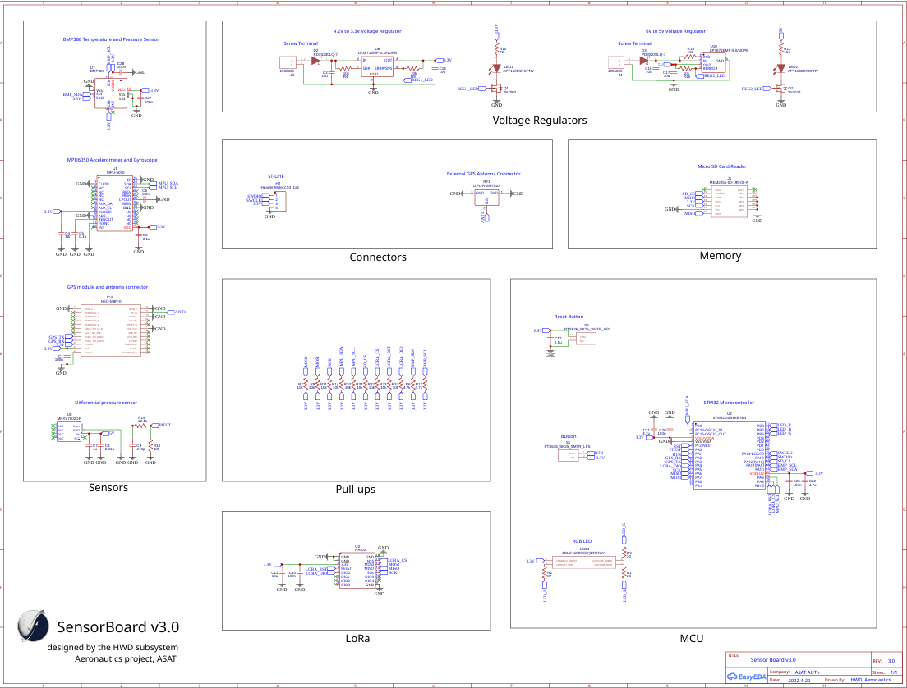
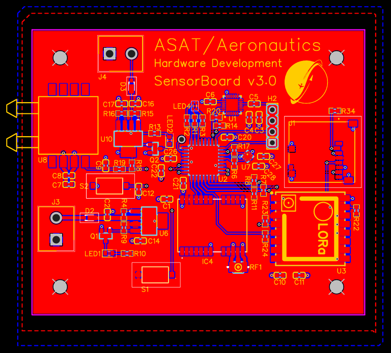
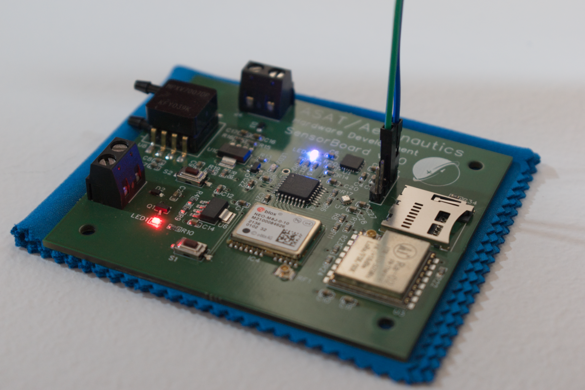
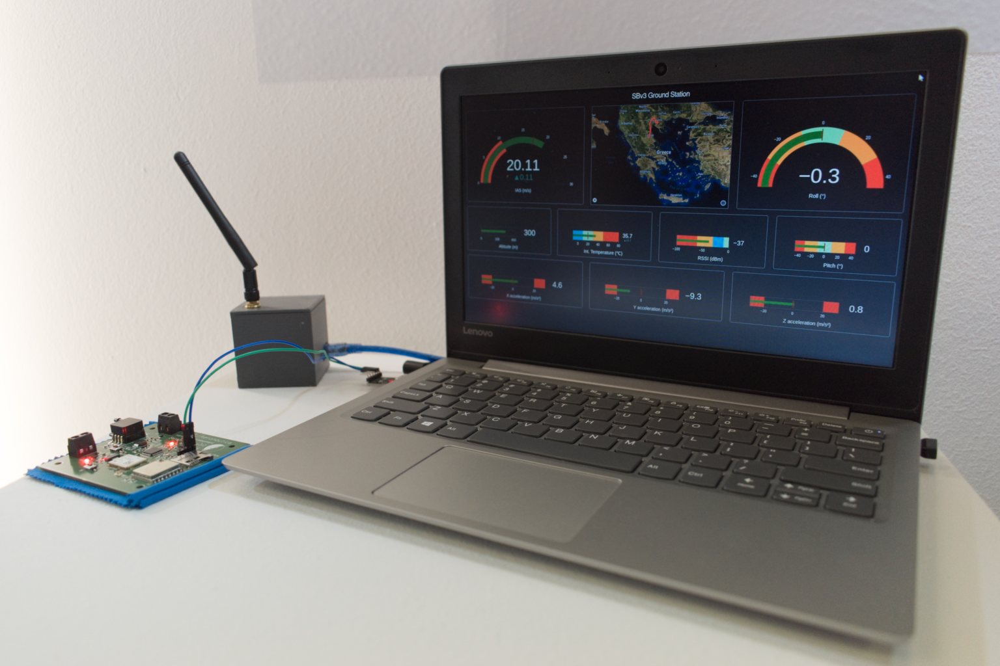

SensorBoard is a PCB designed for storing UAV measurements, performed during my time in Aristotle Space and Aeronautics Team (ASAT). ASAT is a student team that designs and builds UAVs, that participate in student competitions, but also has research projects.
The PCB needed to take and transmit measurements of airspeed, altitude, position, ground speed, battery voltage, acceleration, orientation, temperature, and control surface deflection. All of this data is necessary for a UAV to store during its flight.
An ST microcontroller is used for co-ordinating everything on the board. 4 main sensors are used to take measurements of the data needed: a BMP388 temperature and pressure sensor, an MPU6050 accelerometer and gyroscope, a GPS module combined with an antenna, and a differential pressure sensor connected to the UAV's Pitot tube. Voltage regulators are needed to ensure every component is working at its required voltage, and an SD card reader is used to safely store the data. A LoRa module transmits all data to the ground station.
A layout using 2 layers was designed in EasyEDA. Good design practices were used, such as routing traces at 45 degrees to eliminate noise, using thick traces for the high frequency signals, placing decoupling capacitors as close to the components as possible, and minimizing ground loops.
The board was manufactured and tested, and later connected to the ground station software for real-time monitoring of the flight data.
 